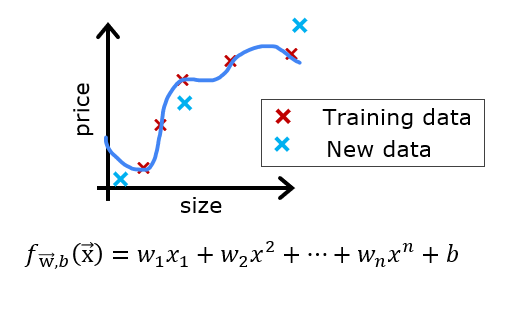

Practice Lab: Advice for Applying Machine Learning#
In this lab, you will explore techniques to evaluate and improve your machine learning models.
Outline#
NOTE: To prevent errors from the autograder, you are not allowed to edit or delete non-graded cells in this notebook . Please also refrain from adding any new cells. Once you have passed this assignment and want to experiment with any of the non-graded code, you may follow the instructions at the bottom of this notebook.
1 - Packages#
First, let’s run the cell below to import all the packages that you will need during this assignment.
numpy is the fundamental package for scientific computing Python.
matplotlib is a popular library to plot graphs in Python.
scikitlearn is a basic library for data mining
tensorflow a popular platform for machine learning.
import numpy as np
%matplotlib widget
import matplotlib.pyplot as plt
from sklearn.linear_model import LinearRegression, Ridge
from sklearn.preprocessing import StandardScaler, PolynomialFeatures
from sklearn.model_selection import train_test_split
from sklearn.metrics import mean_squared_error
import tensorflow as tf
from tensorflow.keras.models import Sequential
from tensorflow.keras.layers import Dense
from tensorflow.keras.activations import relu,linear
from tensorflow.keras.losses import SparseCategoricalCrossentropy
from tensorflow.keras.optimizers import Adam
import logging
logging.getLogger("tensorflow").setLevel(logging.ERROR)
from public_tests_a1 import *
tf.keras.backend.set_floatx('float64')
from assigment_utils import *
tf.autograph.set_verbosity(0)
---------------------------------------------------------------------------
RuntimeError Traceback (most recent call last)
File ~\Python\Lib\site-packages\matplotlib\backends\registry.py:407, in BackendRegistry.resolve_gui_or_backend(self, gui_or_backend)
406 try:
--> 407 return self.resolve_backend(gui_or_backend)
408 except Exception: # KeyError ?
File ~\Python\Lib\site-packages\matplotlib\backends\registry.py:369, in BackendRegistry.resolve_backend(self, backend)
368 if gui is None:
--> 369 raise RuntimeError(f"'{backend}' is not a recognised backend name")
371 return backend, gui if gui != "headless" else None
RuntimeError: 'widget' is not a recognised backend name
During handling of the above exception, another exception occurred:
RuntimeError Traceback (most recent call last)
Cell In[1], line 2
1 import numpy as np
----> 2 get_ipython().run_line_magic('matplotlib', 'widget')
3 import matplotlib.pyplot as plt
4 from sklearn.linear_model import LinearRegression, Ridge
File ~\Python\Lib\site-packages\IPython\core\interactiveshell.py:2504, in InteractiveShell.run_line_magic(self, magic_name, line, _stack_depth)
2502 kwargs['local_ns'] = self.get_local_scope(stack_depth)
2503 with self.builtin_trap:
-> 2504 result = fn(*args, **kwargs)
2506 # The code below prevents the output from being displayed
2507 # when using magics with decorator @output_can_be_silenced
2508 # when the last Python token in the expression is a ';'.
2509 if getattr(fn, magic.MAGIC_OUTPUT_CAN_BE_SILENCED, False):
File ~\Python\Lib\site-packages\IPython\core\magics\pylab.py:103, in PylabMagics.matplotlib(self, line)
98 print(
99 "Available matplotlib backends: %s"
100 % _list_matplotlib_backends_and_gui_loops()
101 )
102 else:
--> 103 gui, backend = self.shell.enable_matplotlib(args.gui)
104 self._show_matplotlib_backend(args.gui, backend)
File ~\Python\Lib\site-packages\IPython\core\interactiveshell.py:3787, in InteractiveShell.enable_matplotlib(self, gui)
3784 import matplotlib_inline.backend_inline
3786 from IPython.core import pylabtools as pt
-> 3787 gui, backend = pt.find_gui_and_backend(gui, self.pylab_gui_select)
3789 if gui != None:
3790 # If we have our first gui selection, store it
3791 if self.pylab_gui_select is None:
File ~\Python\Lib\site-packages\IPython\core\pylabtools.py:349, in find_gui_and_backend(gui, gui_select)
347 else:
348 gui = _convert_gui_to_matplotlib(gui)
--> 349 backend, gui = backend_registry.resolve_gui_or_backend(gui)
351 gui = _convert_gui_from_matplotlib(gui)
352 return gui, backend
File ~\Python\Lib\site-packages\matplotlib\backends\registry.py:409, in BackendRegistry.resolve_gui_or_backend(self, gui_or_backend)
407 return self.resolve_backend(gui_or_backend)
408 except Exception: # KeyError ?
--> 409 raise RuntimeError(
410 f"'{gui_or_backend} is not a recognised GUI loop or backend name")
RuntimeError: 'widget is not a recognised GUI loop or backend name
2 - Evaluating a Learning Algorithm (Polynomial Regression)#

Let’s say you have created a machine learning model and you find it fits your training data very well. You’re done? Not quite. The goal of creating the model was to be able to predict values for new examples.How can you test your model’s performance on new data before deploying it?
The answer has two parts:
Split your original data set into “Training” and “Test” sets.
Use the training data to fit the parameters of the model
Use the test data to evaluate the model on new data
Develop an error function to evaluate your model.
2.1 Splitting your data set#
Lectures advised reserving 20-40% of your data set for testing. Let’s use an sklearn function train_test_split to perform the split. Double-check the shapes after running the following cell.
# Generate some data
X,y,x_ideal,y_ideal = gen_data(18, 2, 0.7)
print("X.shape", X.shape, "y.shape", y.shape)
#split the data using sklearn routine
X_train, X_test, y_train, y_test = train_test_split(X,y,test_size=0.33, random_state=1)
print("X_train.shape", X_train.shape, "y_train.shape", y_train.shape)
print("X_test.shape", X_test.shape, "y_test.shape", y_test.shape)
2.1.1 Plot Train, Test sets#
You can see below the data points that will be part of training (in red) are intermixed with those that the model is not trained on (test). This particular data set is a quadratic function with noise added. The “ideal” curve is shown for reference.
fig, ax = plt.subplots(1,1,figsize=(4,4))
ax.plot(x_ideal, y_ideal, "--", color = "orangered", label="y_ideal", lw=1)
ax.set_title("Training, Test",fontsize = 14)
ax.set_xlabel("x")
ax.set_ylabel("y")
ax.scatter(X_train, y_train, color = "red", label="train")
ax.scatter(X_test, y_test, color = dlc["dlblue"], label="test")
ax.legend(loc='upper left')
plt.show()
2.2 Error calculation for model evaluation, linear regression#
When evaluating a linear regression model, you average the squared error difference of the predicted values and the target values.
Exercise 1#
Below, create a function to evaluate the error on a data set for a linear regression model.
# UNQ_C1
# GRADED CELL: eval_mse
def eval_mse(y, yhat):
"""
Calculate the mean squared error on a data set.
Args:
y : (ndarray Shape (m,) or (m,1)) target value of each example
yhat : (ndarray Shape (m,) or (m,1)) predicted value of each example
Returns:
err: (scalar)
"""
m = len(y)
err = 0.0
for i in range(m):
### START CODE HERE ###
### END CODE HERE ###
return(err)
y_hat = np.array([2.4, 4.2])
y_tmp = np.array([2.3, 4.1])
eval_mse(y_hat, y_tmp)
# BEGIN UNIT TEST
test_eval_mse(eval_mse)
# END UNIT TEST
Click for hints
def eval_mse(y, yhat):
"""
Calculate the mean squared error on a data set.
Args:
y : (ndarray Shape (m,) or (m,1)) target value of each example
yhat : (ndarray Shape (m,) or (m,1)) predicted value of each example
Returns:
err: (scalar)
"""
m = len(y)
err = 0.0
for i in range(m):
err_i = ( (yhat[i] - y[i])**2 )
err += err_i
err = err / (2*m)
return(err)
2.3 Compare performance on training and test data#
Let’s build a high degree polynomial model to minimize training error. This will use the linear_regression functions from sklearn. The code is in the imported utility file if you would like to see the details. The steps below are:
create and fit the model. (‘fit’ is another name for training or running gradient descent).
compute the error on the training data.
compute the error on the test data.
# create a model in sklearn, train on training data
degree = 10
lmodel = lin_model(degree)
lmodel.fit(X_train, y_train)
# predict on training data, find training error
yhat = lmodel.predict(X_train)
err_train = lmodel.mse(y_train, yhat)
# predict on test data, find error
yhat = lmodel.predict(X_test)
err_test = lmodel.mse(y_test, yhat)
The computed error on the training set is substantially less than that of the test set.
print(f"training err {err_train:0.2f}, test err {err_test:0.2f}")
The following plot shows why this is. The model fits the training data very well. To do so, it has created a complex function. The test data was not part of the training and the model does a poor job of predicting on this data.
This model would be described as 1) is overfitting, 2) has high variance 3) ‘generalizes’ poorly.
# plot predictions over data range
x = np.linspace(0,int(X.max()),100) # predict values for plot
y_pred = lmodel.predict(x).reshape(-1,1)
plt_train_test(X_train, y_train, X_test, y_test, x, y_pred, x_ideal, y_ideal, degree)
The test set error shows this model will not work well on new data. If you use the test error to guide improvements in the model, then the model will perform well on the test data… but the test data was meant to represent new data. You need yet another set of data to test new data performance.
The proposal made during lecture is to separate data into three groups. The distribution of training, cross-validation and test sets shown in the below table is a typical distribution, but can be varied depending on the amount of data available.
data |
% of total |
Description |
|---|---|---|
training |
60 |
Data used to tune model parameters \(w\) and \(b\) in training or fitting |
cross-validation |
20 |
Data used to tune other model parameters like degree of polynomial, regularization or the architecture of a neural network. |
test |
20 |
Data used to test the model after tuning to gauge performance on new data |
Let’s generate three data sets below. We’ll once again use train_test_split from sklearn but will call it twice to get three splits:
# Generate data
X,y, x_ideal,y_ideal = gen_data(40, 5, 0.7)
print("X.shape", X.shape, "y.shape", y.shape)
#split the data using sklearn routine
X_train, X_, y_train, y_ = train_test_split(X,y,test_size=0.40, random_state=1)
X_cv, X_test, y_cv, y_test = train_test_split(X_,y_,test_size=0.50, random_state=1)
print("X_train.shape", X_train.shape, "y_train.shape", y_train.shape)
print("X_cv.shape", X_cv.shape, "y_cv.shape", y_cv.shape)
print("X_test.shape", X_test.shape, "y_test.shape", y_test.shape)
3 - Bias and Variance#
Above, it was clear the degree of the polynomial model was too high. How can you choose a good value? It turns out, as shown in the diagram, the training and cross-validation performance can provide guidance. By trying a range of degree values, the training and cross-validation performance can be evaluated. As the degree becomes too large, the cross-validation performance will start to degrade relative to the training performance. Let’s try this on our example.
3.1 Plot Train, Cross-Validation, Test#
You can see below the datapoints that will be part of training (in red) are intermixed with those that the model is not trained on (test and cv).
fig, ax = plt.subplots(1,1,figsize=(4,4))
ax.plot(x_ideal, y_ideal, "--", color = "orangered", label="y_ideal", lw=1)
ax.set_title("Training, CV, Test",fontsize = 14)
ax.set_xlabel("x")
ax.set_ylabel("y")
ax.scatter(X_train, y_train, color = "red", label="train")
ax.scatter(X_cv, y_cv, color = dlc["dlorange"], label="cv")
ax.scatter(X_test, y_test, color = dlc["dlblue"], label="test")
ax.legend(loc='upper left')
plt.show()
3.2 Finding the optimal degree#
In previous labs, you found that you could create a model capable of fitting complex curves by utilizing a polynomial (See Course1, Week2 Feature Engineering and Polynomial Regression Lab). Further, you demonstrated that by increasing the degree of the polynomial, you could create overfitting. (See Course 1, Week3, Over-Fitting Lab). Let’s use that knowledge here to test our ability to tell the difference between over-fitting and under-fitting.
Let’s train the model repeatedly, increasing the degree of the polynomial each iteration. Here, we’re going to use the scikit-learn linear regression model for speed and simplicity.
max_degree = 9
err_train = np.zeros(max_degree)
err_cv = np.zeros(max_degree)
x = np.linspace(0,int(X.max()),100)
y_pred = np.zeros((100,max_degree)) #columns are lines to plot
for degree in range(max_degree):
lmodel = lin_model(degree+1)
lmodel.fit(X_train, y_train)
yhat = lmodel.predict(X_train)
err_train[degree] = lmodel.mse(y_train, yhat)
yhat = lmodel.predict(X_cv)
err_cv[degree] = lmodel.mse(y_cv, yhat)
y_pred[:,degree] = lmodel.predict(x)
optimal_degree = np.argmin(err_cv)+1
Let’s plot the result:
plt.close("all")
plt_optimal_degree(X_train, y_train, X_cv, y_cv, x, y_pred, x_ideal, y_ideal,
err_train, err_cv, optimal_degree, max_degree)
The plot above demonstrates that separating data into two groups, data the model is trained on and data the model has not been trained on, can be used to determine if the model is underfitting or overfitting. In our example, we created a variety of models varying from underfitting to overfitting by increasing the degree of the polynomial used.
On the left plot, the solid lines represent the predictions from these models. A polynomial model with degree 1 produces a straight line that intersects very few data points, while the maximum degree hews very closely to every data point.
on the right:
the error on the trained data (blue) decreases as the model complexity increases as expected
the error of the cross-validation data decreases initially as the model starts to conform to the data, but then increases as the model starts to over-fit on the training data (fails to generalize).
It’s worth noting that the curves in these examples as not as smooth as one might draw for a lecture. It’s clear the specific data points assigned to each group can change your results significantly. The general trend is what is important.
3.3 Tuning Regularization.#
In previous labs, you have utilized regularization to reduce overfitting. Similar to degree, one can use the same methodology to tune the regularization parameter lambda (\(\lambda\)).
Let’s demonstrate this by starting with a high degree polynomial and varying the regularization parameter.
lambda_range = np.array([0.0, 1e-6, 1e-5, 1e-4,1e-3,1e-2, 1e-1,1,10,100])
num_steps = len(lambda_range)
degree = 10
err_train = np.zeros(num_steps)
err_cv = np.zeros(num_steps)
x = np.linspace(0,int(X.max()),100)
y_pred = np.zeros((100,num_steps)) #columns are lines to plot
for i in range(num_steps):
lambda_= lambda_range[i]
lmodel = lin_model(degree, regularization=True, lambda_=lambda_)
lmodel.fit(X_train, y_train)
yhat = lmodel.predict(X_train)
err_train[i] = lmodel.mse(y_train, yhat)
yhat = lmodel.predict(X_cv)
err_cv[i] = lmodel.mse(y_cv, yhat)
y_pred[:,i] = lmodel.predict(x)
optimal_reg_idx = np.argmin(err_cv)
plt.close("all")
plt_tune_regularization(X_train, y_train, X_cv, y_cv, x, y_pred, err_train, err_cv, optimal_reg_idx, lambda_range)
Above, the plots show that as regularization increases, the model moves from a high variance (overfitting) model to a high bias (underfitting) model. The vertical line in the right plot shows the optimal value of lambda. In this example, the polynomial degree was set to 10.
3.4 Getting more data: Increasing Training Set Size (m)#
When a model is overfitting (high variance), collecting additional data can improve performance. Let’s try that here.
X_train, y_train, X_cv, y_cv, x, y_pred, err_train, err_cv, m_range,degree = tune_m()
plt_tune_m(X_train, y_train, X_cv, y_cv, x, y_pred, err_train, err_cv, m_range, degree)
The above plots show that when a model has high variance and is overfitting, adding more examples improves performance. Note the curves on the left plot. The final curve with the highest value of \(m\) is a smooth curve that is in the center of the data. On the right, as the number of examples increases, the performance of the training set and cross-validation set converge to similar values. Note that the curves are not as smooth as one might see in a lecture. That is to be expected. The trend remains clear: more data improves generalization.
Note that adding more examples when the model has high bias (underfitting) does not improve performance.
4 - Evaluating a Learning Algorithm (Neural Network)#
Above, you tuned aspects of a polynomial regression model. Here, you will work with a neural network model. Let’s start by creating a classification data set.
4.1 Data Set#
Run the cell below to generate a data set and split it into training, cross-validation (CV) and test sets. In this example, we’re increasing the percentage of cross-validation data points for emphasis.
# Generate and split data set
X, y, centers, classes, std = gen_blobs()
# split the data. Large CV population for demonstration
X_train, X_, y_train, y_ = train_test_split(X,y,test_size=0.50, random_state=1)
X_cv, X_test, y_cv, y_test = train_test_split(X_,y_,test_size=0.20, random_state=1)
print("X_train.shape:", X_train.shape, "X_cv.shape:", X_cv.shape, "X_test.shape:", X_test.shape)
plt_train_eq_dist(X_train, y_train,classes, X_cv, y_cv, centers, std)
Above, you can see the data on the left. There are six clusters identified by color. Both training points (dots) and cross-validataion points (triangles) are shown. The interesting points are those that fall in ambiguous locations where either cluster might consider them members. What would you expect a neural network model to do? What would be an example of overfitting? underfitting?
On the right is an example of an ‘ideal’ model, or a model one might create knowing the source of the data. The lines represent ‘equal distance’ boundaries where the distance between center points is equal. It’s worth noting that this model would “misclassify” roughly 8% of the total data set.
4.2 Evaluating categorical model by calculating classification error#
The evaluation function for categorical models used here is simply the fraction of incorrect predictions:
$\( J_{cv} =\frac{1}{m}\sum_{i=0}^{m-1}
\begin{cases}
1, & \text{if \)\hat{y}^{(i)} \neq y^{(i)}\(}\\
0, & \text{otherwise}
\end{cases}
\)$
Exercise 2#
Below, complete the routine to calculate classification error. Note, in this lab, target values are the index of the category and are not one-hot encoded.
# UNQ_C2
# GRADED CELL: eval_cat_err
def eval_cat_err(y, yhat):
"""
Calculate the categorization error
Args:
y : (ndarray Shape (m,) or (m,1)) target value of each example
yhat : (ndarray Shape (m,) or (m,1)) predicted value of each example
Returns:|
cerr: (scalar)
"""
m = len(y)
incorrect = 0
for i in range(m):
### START CODE HERE ###
### END CODE HERE ###
return(cerr)
y_hat = np.array([1, 2, 0])
y_tmp = np.array([1, 2, 3])
print(f"categorization error {np.squeeze(eval_cat_err(y_hat, y_tmp)):0.3f}, expected:0.333" )
y_hat = np.array([[1], [2], [0], [3]])
y_tmp = np.array([[1], [2], [1], [3]])
print(f"categorization error {np.squeeze(eval_cat_err(y_hat, y_tmp)):0.3f}, expected:0.250" )
# BEGIN UNIT TEST
test_eval_cat_err(eval_cat_err)
# END UNIT TEST
Click for hints
def eval_cat_err(y, yhat):
"""
Calculate the categorization error
Args:
y : (ndarray Shape (m,) or (m,1)) target value of each example
yhat : (ndarray Shape (m,) or (m,1)) predicted value of each example
Returns:|
cerr: (scalar)
"""
m = len(y)
incorrect = 0
for i in range(m):
if yhat[i] != y[i]: # @REPLACE
incorrect += 1 # @REPLACE
cerr = incorrect/m # @REPLACE
return(cerr)
5 - Model Complexity#
Below, you will build two models. A complex model and a simple model. You will evaluate the models to determine if they are likely to overfit or underfit.
5.1 Complex model#
Exercise 3#
Below, compose a three-layer model:
Dense layer with 120 units, relu activation
Dense layer with 40 units, relu activation
Dense layer with 6 units and a linear activation (not softmax)
Compile usingloss with
SparseCategoricalCrossentropy, remember to usefrom_logits=TrueAdam optimizer with learning rate of 0.01.
# UNQ_C3
# GRADED CELL: model
import logging
logging.getLogger("tensorflow").setLevel(logging.ERROR)
tf.random.set_seed(1234)
model = Sequential(
[
### START CODE HERE ###
### END CODE HERE ###
], name="Complex"
)
model.compile(
### START CODE HERE ###
loss=None,
optimizer=None,
### END CODE HERE ###
)
# BEGIN UNIT TEST
model.fit(
X_train, y_train,
epochs=1000
)
# END UNIT TEST
# BEGIN UNIT TEST
model.summary()
model_test(model, classes, X_train.shape[1])
# END UNIT TEST
Click for hints
Summary should match this (layer instance names may increment )
Model: "Complex"
_________________________________________________________________
Layer (type) Output Shape Param #
=================================================================
L1 (Dense) (None, 120) 360
_________________________________________________________________
L2 (Dense) (None, 40) 4840
_________________________________________________________________
L3 (Dense) (None, 6) 246
=================================================================
Total params: 5,446
Trainable params: 5,446
Non-trainable params: 0
_________________________________________________________________
Click for more hints
tf.random.set_seed(1234)
model = Sequential(
[
Dense(120, activation = 'relu', name = "L1"),
Dense(40, activation = 'relu', name = "L2"),
Dense(classes, activation = 'linear', name = "L3")
], name="Complex"
)
model.compile(
loss=tf.keras.losses.SparseCategoricalCrossentropy(from_logits=True),
optimizer=tf.keras.optimizers.Adam(0.01),
)
model.fit(
X_train,y_train,
epochs=1000
)
#make a model for plotting routines to call
model_predict = lambda Xl: np.argmax(tf.nn.softmax(model.predict(Xl)).numpy(),axis=1)
plt_nn(model_predict,X_train,y_train, classes, X_cv, y_cv, suptitle="Complex Model")
This model has worked very hard to capture outliers of each category. As a result, it has miscategorized some of the cross-validation data. Let’s calculate the classification error.
training_cerr_complex = eval_cat_err(y_train, model_predict(X_train))
cv_cerr_complex = eval_cat_err(y_cv, model_predict(X_cv))
print(f"categorization error, training, complex model: {training_cerr_complex:0.3f}")
print(f"categorization error, cv, complex model: {cv_cerr_complex:0.3f}")
5.1 Simple model#
Now, let’s try a simple model
Exercise 4#
Below, compose a two-layer model:
Dense layer with 6 units, relu activation
Dense layer with 6 units and a linear activation. Compile using
loss with
SparseCategoricalCrossentropy, remember to usefrom_logits=TrueAdam optimizer with learning rate of 0.01.
# UNQ_C4
# GRADED CELL: model_s
tf.random.set_seed(1234)
model_s = Sequential(
[
### START CODE HERE ###
### END CODE HERE ###
], name = "Simple"
)
model_s.compile(
### START CODE HERE ###
loss=None,
optimizer=None,
### START CODE HERE ###
)
import logging
logging.getLogger("tensorflow").setLevel(logging.ERROR)
# BEGIN UNIT TEST
model_s.fit(
X_train,y_train,
epochs=1000
)
# END UNIT TEST
# BEGIN UNIT TEST
model_s.summary()
model_s_test(model_s, classes, X_train.shape[1])
# END UNIT TEST
Click for hints
Summary should match this (layer instance names may increment )
Model: "Simple"
_________________________________________________________________
Layer (type) Output Shape Param #
=================================================================
L1 (Dense) (None, 6) 18
_________________________________________________________________
L2 (Dense) (None, 6) 42
=================================================================
Total params: 60
Trainable params: 60
Non-trainable params: 0
_________________________________________________________________
Click for more hints
tf.random.set_seed(1234)
model_s = Sequential(
[
Dense(6, activation = 'relu', name="L1"), # @REPLACE
Dense(classes, activation = 'linear', name="L2") # @REPLACE
], name = "Simple"
)
model_s.compile(
loss=tf.keras.losses.SparseCategoricalCrossentropy(from_logits=True), # @REPLACE
optimizer=tf.keras.optimizers.Adam(0.01), # @REPLACE
)
model_s.fit(
X_train,y_train,
epochs=1000
)
#make a model for plotting routines to call
model_predict_s = lambda Xl: np.argmax(tf.nn.softmax(model_s.predict(Xl)).numpy(),axis=1)
plt_nn(model_predict_s,X_train,y_train, classes, X_cv, y_cv, suptitle="Simple Model")
This simple models does pretty well. Let’s calculate the classification error.
training_cerr_simple = eval_cat_err(y_train, model_predict_s(X_train))
cv_cerr_simple = eval_cat_err(y_cv, model_predict_s(X_cv))
print(f"categorization error, training, simple model, {training_cerr_simple:0.3f}, complex model: {training_cerr_complex:0.3f}" )
print(f"categorization error, cv, simple model, {cv_cerr_simple:0.3f}, complex model: {cv_cerr_complex:0.3f}" )
Our simple model has a little higher classification error on training data but does better on cross-validation data than the more complex model.
6 - Regularization#
As in the case of polynomial regression, one can apply regularization to moderate the impact of a more complex model. Let’s try this below.
Exercise 5#
Reconstruct your complex model, but this time include regularization. Below, compose a three-layer model:
Dense layer with 120 units, relu activation,
kernel_regularizer=tf.keras.regularizers.l2(0.1)Dense layer with 40 units, relu activation,
kernel_regularizer=tf.keras.regularizers.l2(0.1)Dense layer with 6 units and a linear activation. Compile using
loss with
SparseCategoricalCrossentropy, remember to usefrom_logits=TrueAdam optimizer with learning rate of 0.01.
# UNQ_C5
# GRADED CELL: model_r
tf.random.set_seed(1234)
model_r = Sequential(
[
### START CODE HERE ###
### START CODE HERE ###
], name= None
)
model_r.compile(
### START CODE HERE ###
loss=None,
optimizer=None,
### START CODE HERE ###
)
# BEGIN UNIT TEST
model_r.fit(
X_train, y_train,
epochs=1000
)
# END UNIT TEST
# BEGIN UNIT TEST
model_r.summary()
model_r_test(model_r, classes, X_train.shape[1])
# END UNIT TEST
Click for hints
Summary should match this (layer instance names may increment )
Model: "ComplexRegularized"
_________________________________________________________________
Layer (type) Output Shape Param #
=================================================================
L1 (Dense) (None, 120) 360
_________________________________________________________________
L2 (Dense) (None, 40) 4840
_________________________________________________________________
L3 (Dense) (None, 6) 246
=================================================================
Total params: 5,446
Trainable params: 5,446
Non-trainable params: 0
_________________________________________________________________
Click for more hints
tf.random.set_seed(1234)
model_r = Sequential(
[
Dense(120, activation = 'relu', kernel_regularizer=tf.keras.regularizers.l2(0.1), name="L1"),
Dense(40, activation = 'relu', kernel_regularizer=tf.keras.regularizers.l2(0.1), name="L2"),
Dense(classes, activation = 'linear', name="L3")
], name="ComplexRegularized"
)
model_r.compile(
loss=tf.keras.losses.SparseCategoricalCrossentropy(from_logits=True),
optimizer=tf.keras.optimizers.Adam(0.01),
)
model_r.fit(
X_train,y_train,
epochs=1000
)
#make a model for plotting routines to call
model_predict_r = lambda Xl: np.argmax(tf.nn.softmax(model_r.predict(Xl)).numpy(),axis=1)
plt_nn(model_predict_r, X_train,y_train, classes, X_cv, y_cv, suptitle="Regularized")
The results look very similar to the ‘ideal’ model. Let’s check classification error.
training_cerr_reg = eval_cat_err(y_train, model_predict_r(X_train))
cv_cerr_reg = eval_cat_err(y_cv, model_predict_r(X_cv))
test_cerr_reg = eval_cat_err(y_test, model_predict_r(X_test))
print(f"categorization error, training, regularized: {training_cerr_reg:0.3f}, simple model, {training_cerr_simple:0.3f}, complex model: {training_cerr_complex:0.3f}" )
print(f"categorization error, cv, regularized: {cv_cerr_reg:0.3f}, simple model, {cv_cerr_simple:0.3f}, complex model: {cv_cerr_complex:0.3f}" )
The simple model is a bit better in the training set than the regularized model but worse in the cross validation set.
7 - Iterate to find optimal regularization value#
As you did in linear regression, you can try many regularization values. This code takes several minutes to run. If you have time, you can run it and check the results. If not, you have completed the graded parts of the assignment!
tf.random.set_seed(1234)
lambdas = [0.0, 0.001, 0.01, 0.05, 0.1, 0.2, 0.3]
models=[None] * len(lambdas)
for i in range(len(lambdas)):
lambda_ = lambdas[i]
models[i] = Sequential(
[
Dense(120, activation = 'relu', kernel_regularizer=tf.keras.regularizers.l2(lambda_)),
Dense(40, activation = 'relu', kernel_regularizer=tf.keras.regularizers.l2(lambda_)),
Dense(classes, activation = 'linear')
]
)
models[i].compile(
loss=tf.keras.losses.SparseCategoricalCrossentropy(from_logits=True),
optimizer=tf.keras.optimizers.Adam(0.01),
)
models[i].fit(
X_train,y_train,
epochs=1000
)
print(f"Finished lambda = {lambda_}")
plot_iterate(lambdas, models, X_train, y_train, X_cv, y_cv)
As regularization is increased, the performance of the model on the training and cross-validation data sets converge. For this data set and model, lambda > 0.01 seems to be a reasonable choice.
7.1 Test#
Let’s try our optimized models on the test set and compare them to ‘ideal’ performance.
plt_compare(X_test,y_test, classes, model_predict_s, model_predict_r, centers)
Our test set is small and seems to have a number of outliers so classification error is high. However, the performance of our optimized models is comparable to ideal performance.
Congratulations!#
You have become familiar with important tools to apply when evaluating your machine learning models. Namely:
splitting data into trained and untrained sets allows you to differentiate between underfitting and overfitting
creating three data sets, Training, Cross-Validation and Test allows you to
train your parameters \(W,B\) with the training set
tune model parameters such as complexity, regularization and number of examples with the cross-validation set
evaluate your ‘real world’ performance using the test set.
comparing training vs cross-validation performance provides insight into a model’s propensity towards overfitting (high variance) or underfitting (high bias)
Please click here if you want to experiment with any of the non-graded code.
Important Note: Please only do this when you've already passed the assignment to avoid problems with the autograder.
- On the notebook’s menu, click “View” > “Cell Toolbar” > “Edit Metadata”
- Hit the “Edit Metadata” button next to the code cell which you want to lock/unlock
- Set the attribute value for “editable” to:
- “true” if you want to unlock it
- “false” if you want to lock it
- On the notebook’s menu, click “View” > “Cell Toolbar” > “None”
Here's a short demo of how to do the steps above: